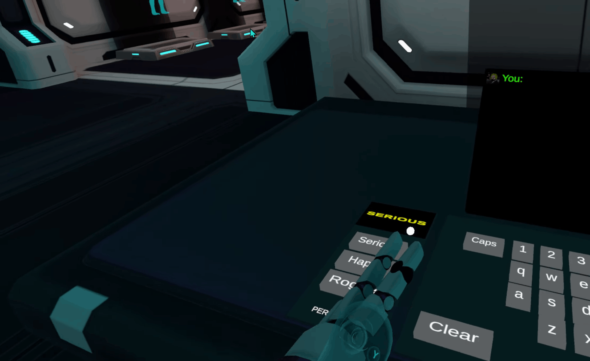
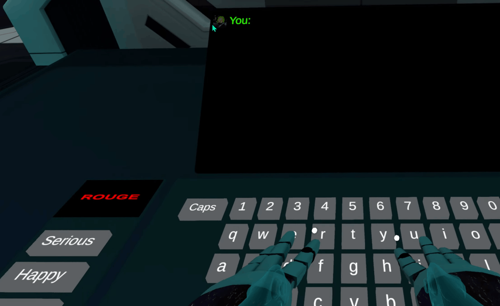

Focus
Input-to-response flow
The project explores how buttons, typing, and conversational responses can work together smoothly in VR without losing interface clarity.
VR AI Chat Project
Xeno Lab7 is a VR AI chat experience that combines immersive interaction with conversational systems. Users trigger actions with buttons, enter text through typing interfaces, and receive system responses through a lab-based interface designed to keep interaction state and conversational flow legible in real time.
Focus
The project explores how buttons, typing, and conversational responses can work together smoothly in VR without losing interface clarity.
Outcome
It demonstrates how AI-driven interaction can stay usable when responses, controls, and user intent are presented clearly in a spatial environment.
Project Media

